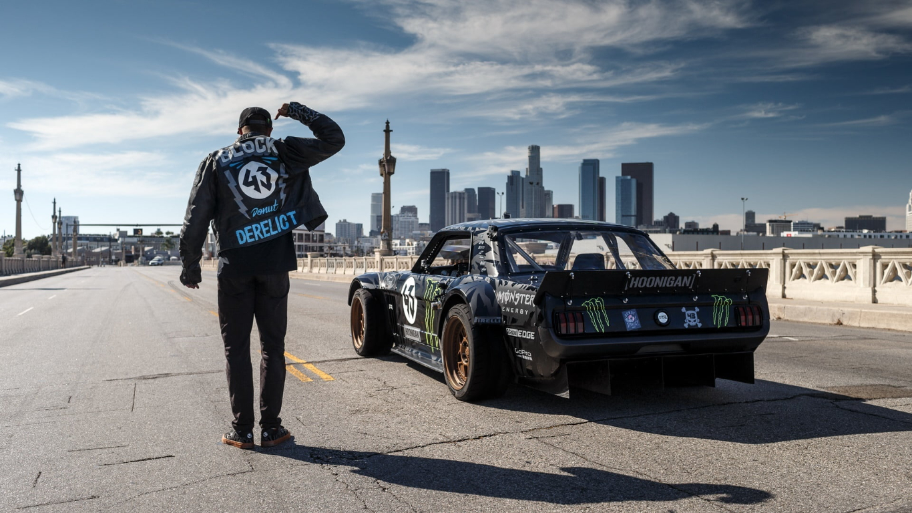

Tribute To The Drifting Legend

Ken Block
Introduction
Ken Block is a professional rally driver, entrepreneur, and owner of Hoonigan Industries. He is widely known for his viral Gymkhana video series and his success in the World Rally Championship, Rally America, and Global Rallycross Championship.
Early Life and Career
Ken Block was born on November 21, 1967, in Long Beach, California. He grew up skateboarding and snowboarding and eventually started racing motocross. In 1993, he co-founded DC Shoes, a skateboarding and snowboarding apparel company, which he later sold to Quiksilver for $87 million in 2004. In 2005, he co-founded the Hoonigan Racing Division and began competing in the Rally America Championship.
Gymkhana Videos
Ken Block is perhaps most famous for his Gymkhana video series, in which he performs elaborate stunts and tricks in a high-performance car. The first Gymkhana video was released in 2008 and quickly went viral, with millions of views on YouTube. Block has since released nine more Gymkhana videos, each more elaborate and impressive than the last.
Competitive Racing
In addition to his viral Gymkhana videos, Ken Block is also a highly successful competitive rally driver. He has won numerous championships in the Rally America series, including the 2006, 2007, and 2009 championships. He has also competed in the World Rally Championship and the Global Rallycross Championship.
Hoonigan Industries
In 2011, Ken Block and his team launched Hoonigan Industries, a lifestyle brand that produces apparel, accessories, and automotive products. The brand is inspired by Block's passion for motorsports and extreme sports, and has gained a large following among fans of these activities.
Achievements
Ken Block has achieved numerous accolades throughout his career, including:
- Three Rally America Championships (2006, 2007, 2009)
- Two X Games Rally Car medals (2008 and 2010)
- World Rally Championship podium finish in Rally Mexico (2013)
- Global Rallycross Championship podium finish in Las Vegas (2014)